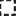

<!doctype html>
<html lang="en">
    <head>
        <meta charset="utf-8">
        <meta http-equiv="X-UA-Compatible" content="IE=edge">
        <meta name="viewport" content="initial-scale=1,user-scalable=no,maximum-scale=1,width=device-width">
        <meta name="mobile-web-app-capable" content="yes">
        <meta name="apple-mobile-web-app-capable" content="yes">
        <link rel="stylesheet" href="css/leaflet.css">
        <link rel="stylesheet" href="css/L.Control.Layers.Tree.css">
        <link rel="stylesheet" href="css/qgis2web.css">
        <link rel="stylesheet" href="css/fontawesome-all.min.css">
        <link rel="stylesheet" href="css/leaflet-control-geocoder.Geocoder.css">
        <link rel="stylesheet" href="css/leaflet-measure.css">
        <style>
        html, body, #map {
            width: 100%;
            height: 100%;
            padding: 0;
            margin: 0;
        }
        </style>
        <title></title>
    </head>
    <body>
        <div id="map">
        </div>
        <script src="js/qgis2web_expressions.js"></script>
        <script src="js/leaflet.js"></script>
        <script src="js/L.Control.Layers.Tree.min.js"></script>
        <script src="js/leaflet.rotatedMarker.js"></script>
        <script src="js/leaflet.pattern.js"></script>
        <script src="js/leaflet-hash.js"></script>
        <script src="js/Autolinker.min.js"></script>
        <script src="js/rbush.min.js"></script>
        <script src="js/labelgun.min.js"></script>
        <script src="js/labels.js"></script>
        <script src="js/leaflet-control-geocoder.Geocoder.js"></script>
        <script src="js/leaflet-measure.js"></script>
        <script src="data/KAWASANKUBUR_2.js"></script>
        <script src="data/KAWASANKUBURBARU_3.js"></script>
        <script src="data/KUBURBARU_4.js"></script>
        <script src="data/KUBURLAMA_5.js"></script>
        <script>
        var highlightLayer;
        function highlightFeature(e) {
            highlightLayer = e.target;
            highlightLayer.openPopup();
        }
        var map = L.map('map', {
            zoomControl:true, maxZoom:28, minZoom:3
        }).fitBounds([[5.390816644816948,100.56138380957785],[5.391085691345606,100.56190965183]]);
        var hash = new L.Hash(map);
        map.attributionControl.setPrefix('<a href="https://github.com/tomchadwin/qgis2web" target="_blank">qgis2web</a> &middot; <a href="https://leafletjs.com" title="A JS library for interactive maps">Leaflet</a> &middot; <a href="https://qgis.org">QGIS</a>');
        var autolinker = new Autolinker({truncate: {length: 30, location: 'smart'}});
        function removeEmptyRowsFromPopupContent(content, feature) {
         var tempDiv = document.createElement('div');
         tempDiv.innerHTML = content;
         var rows = tempDiv.querySelectorAll('tr');
         for (var i = 0; i < rows.length; i++) {
             var td = rows[i].querySelector('td.visible-with-data');
             var key = td ? td.id : '';
             if (td && td.classList.contains('visible-with-data') && feature.properties[key] == null) {
                 rows[i].parentNode.removeChild(rows[i]);
             }
         }
         return tempDiv.innerHTML;
        }
        document.querySelector(".leaflet-popup-pane").addEventListener("load", function(event) {
          var tagName = event.target.tagName,
            popup = map._popup;
          // Also check if flag is already set.
          if (tagName === "IMG" && popup && !popup._updated) {
            popup._updated = true; // Set flag to prevent looping.
            popup.update();
          }
        }, true);
        var measureControl = new L.Control.Measure({
            position: 'topleft',
            primaryLengthUnit: 'meters',
            secondaryLengthUnit: 'kilometers',
            primaryAreaUnit: 'sqmeters',
            secondaryAreaUnit: 'hectares'
        });
        measureControl.addTo(map);
        document.getElementsByClassName('leaflet-control-measure-toggle')[0]
        .innerHTML = '';
        document.getElementsByClassName('leaflet-control-measure-toggle')[0]
        .className += ' fas fa-ruler';
        var bounds_group = new L.featureGroup([]);
        function setBounds() {
        }
        map.createPane('pane_OSMStandard_0');
        map.getPane('pane_OSMStandard_0').style.zIndex = 400;
        var layer_OSMStandard_0 = L.tileLayer('http://tile.openstreetmap.org/{z}/{x}/{y}.png', {
            pane: 'pane_OSMStandard_0',
            opacity: 1.0,
            attribution: '<a href="https://www.openstreetmap.org/copyright">© OpenStreetMap contributors, CC-BY-SA</a>',
            minZoom: 3,
            maxZoom: 28,
            minNativeZoom: 0,
            maxNativeZoom: 19
        });
        layer_OSMStandard_0;
        map.addLayer(layer_OSMStandard_0);
        map.createPane('pane_GoogleSatellite_1');
        map.getPane('pane_GoogleSatellite_1').style.zIndex = 401;
        var layer_GoogleSatellite_1 = L.tileLayer('https://mt1.google.com/vt/lyrs=s&x={x}&y={y}&z={z}', {
            pane: 'pane_GoogleSatellite_1',
            opacity: 1.0,
            attribution: '',
            minZoom: 3,
            maxZoom: 28,
            minNativeZoom: 0,
            maxNativeZoom: 19
        });
        layer_GoogleSatellite_1;
        map.addLayer(layer_GoogleSatellite_1);
        function pop_KAWASANKUBUR_2(feature, layer) {
            layer.on({
                mouseout: function(e) {
                    if (typeof layer.closePopup == 'function') {
                        layer.closePopup();
                    } else {
                        layer.eachLayer(function(feature){
                            feature.closePopup()
                        });
                    }
                },
                mouseover: highlightFeature,
            });
            var popupContent = '<table>\
                    <tr>\
                        <th scope="row">K.KUBUR</th>\
                        <td>' + (feature.properties['K.KUBUR'] !== null ? autolinker.link(feature.properties['K.KUBUR'].toLocaleString()) : '') + '</td>\
                    </tr>\
                </table>';
            layer.bindPopup(popupContent, {maxHeight: 400});
            var popup = layer.getPopup();
            var content = popup.getContent();
            var updatedContent = removeEmptyRowsFromPopupContent(content, feature);
            popup.setContent(updatedContent);
        }

        function style_KAWASANKUBUR_2_0() {
            return {
                pane: 'pane_KAWASANKUBUR_2',
                opacity: 1,
                color: 'rgba(35,35,35,1.0)',
                dashArray: '',
                lineCap: 'square',
                lineJoin: 'bevel',
                weight: 3.0,
                fillOpacity: 0,
                interactive: true,
            }
        }
        map.createPane('pane_KAWASANKUBUR_2');
        map.getPane('pane_KAWASANKUBUR_2').style.zIndex = 402;
        map.getPane('pane_KAWASANKUBUR_2').style['mix-blend-mode'] = 'normal';
        var layer_KAWASANKUBUR_2 = new L.geoJson(json_KAWASANKUBUR_2, {
            attribution: '',
            interactive: true,
            dataVar: 'json_KAWASANKUBUR_2',
            layerName: 'layer_KAWASANKUBUR_2',
            pane: 'pane_KAWASANKUBUR_2',
            onEachFeature: pop_KAWASANKUBUR_2,
            style: style_KAWASANKUBUR_2_0,
        });
        bounds_group.addLayer(layer_KAWASANKUBUR_2);
        map.addLayer(layer_KAWASANKUBUR_2);
        function pop_KAWASANKUBURBARU_3(feature, layer) {
            layer.on({
                mouseout: function(e) {
                    if (typeof layer.closePopup == 'function') {
                        layer.closePopup();
                    } else {
                        layer.eachLayer(function(feature){
                            feature.closePopup()
                        });
                    }
                },
                mouseover: highlightFeature,
            });
            var popupContent = '<table>\
                    <tr>\
                        <th scope="row">K.K. BARU</th>\
                        <td>' + (feature.properties['K.K. BARU'] !== null ? autolinker.link(feature.properties['K.K. BARU'].toLocaleString()) : '') + '</td>\
                    </tr>\
                </table>';
            layer.bindPopup(popupContent, {maxHeight: 400});
            var popup = layer.getPopup();
            var content = popup.getContent();
            var updatedContent = removeEmptyRowsFromPopupContent(content, feature);
            popup.setContent(updatedContent);
        }

        function style_KAWASANKUBURBARU_3_0() {
            return {
                pane: 'pane_KAWASANKUBURBARU_3',
                opacity: 1,
                color: 'rgba(35,35,35,1.0)',
                dashArray: '3.0,6.0',
                lineCap: 'square',
                lineJoin: 'bevel',
                weight: 3.0,
                fillOpacity: 0,
                interactive: true,
            }
        }
        map.createPane('pane_KAWASANKUBURBARU_3');
        map.getPane('pane_KAWASANKUBURBARU_3').style.zIndex = 403;
        map.getPane('pane_KAWASANKUBURBARU_3').style['mix-blend-mode'] = 'normal';
        var layer_KAWASANKUBURBARU_3 = new L.geoJson(json_KAWASANKUBURBARU_3, {
            attribution: '',
            interactive: true,
            dataVar: 'json_KAWASANKUBURBARU_3',
            layerName: 'layer_KAWASANKUBURBARU_3',
            pane: 'pane_KAWASANKUBURBARU_3',
            onEachFeature: pop_KAWASANKUBURBARU_3,
            style: style_KAWASANKUBURBARU_3_0,
        });
        bounds_group.addLayer(layer_KAWASANKUBURBARU_3);
        map.addLayer(layer_KAWASANKUBURBARU_3);
        function pop_KUBURBARU_4(feature, layer) {
            layer.on({
                mouseout: function(e) {
                    if (typeof layer.closePopup == 'function') {
                        layer.closePopup();
                    } else {
                        layer.eachLayer(function(feature){
                            feature.closePopup()
                        });
                    }
                },
                mouseover: highlightFeature,
            });
            var popupContent = '<table>\
                    <tr>\
                        <th scope="row">NAMA</th>\
                        <td>' + (feature.properties['NAMA'] !== null ? autolinker.link(feature.properties['NAMA'].toLocaleString()) : '') + '</td>\
                    </tr>\
                    <tr>\
                        <th scope="row">UMUR</th>\
                        <td>' + (feature.properties['UMUR'] !== null ? autolinker.link(feature.properties['UMUR'].toLocaleString()) : '') + '</td>\
                    </tr>\
                    <tr>\
                        <th scope="row">TARIKH LAHIR</th>\
                        <td>' + (feature.properties['TARIKH LAHIR'] !== null ? autolinker.link(feature.properties['TARIKH LAHIR'].toLocaleString()) : '') + '</td>\
                    </tr>\
                    <tr>\
                        <th scope="row">TARIKH KEMATIAN</th>\
                        <td>' + (feature.properties['TARIKH KEMATIAN'] !== null ? autolinker.link(feature.properties['TARIKH KEMATIAN'].toLocaleString()) : '') + '</td>\
                    </tr>\
                    <tr>\
                        <th scope="row">NAMA PEWARIS</th>\
                        <td>' + (feature.properties['NAMA PEWARIS'] !== null ? autolinker.link(feature.properties['NAMA PEWARIS'].toLocaleString()) : '') + '</td>\
                    </tr>\
                    <tr>\
                        <th scope="row">NO. TELEFON WARIS</th>\
                        <td>' + (feature.properties['NO. TELEFON WARIS'] !== null ? autolinker.link(feature.properties['NO. TELEFON WARIS'].toLocaleString()) : '') + '</td>\
                    </tr>\
                </table>';
            layer.bindPopup(popupContent, {maxHeight: 400});
            var popup = layer.getPopup();
            var content = popup.getContent();
            var updatedContent = removeEmptyRowsFromPopupContent(content, feature);
            popup.setContent(updatedContent);
        }

        function style_KUBURBARU_4_0() {
            return {
                pane: 'pane_KUBURBARU_4',
                radius: 4.0,
                opacity: 1,
                color: 'rgba(35,35,35,1.0)',
                dashArray: '',
                lineCap: 'butt',
                lineJoin: 'miter',
                weight: 1,
                fill: true,
                fillOpacity: 1,
                fillColor: 'rgba(221,29,19,1.0)',
                interactive: true,
            }
        }
        map.createPane('pane_KUBURBARU_4');
        map.getPane('pane_KUBURBARU_4').style.zIndex = 404;
        map.getPane('pane_KUBURBARU_4').style['mix-blend-mode'] = 'normal';
        var layer_KUBURBARU_4 = new L.geoJson(json_KUBURBARU_4, {
            attribution: '',
            interactive: true,
            dataVar: 'json_KUBURBARU_4',
            layerName: 'layer_KUBURBARU_4',
            pane: 'pane_KUBURBARU_4',
            onEachFeature: pop_KUBURBARU_4,
            pointToLayer: function (feature, latlng) {
                var context = {
                    feature: feature,
                    variables: {}
                };
                return L.circleMarker(latlng, style_KUBURBARU_4_0(feature));
            },
        });
        bounds_group.addLayer(layer_KUBURBARU_4);
        map.addLayer(layer_KUBURBARU_4);
        function pop_KUBURLAMA_5(feature, layer) {
            layer.on({
                mouseout: function(e) {
                    if (typeof layer.closePopup == 'function') {
                        layer.closePopup();
                    } else {
                        layer.eachLayer(function(feature){
                            feature.closePopup()
                        });
                    }
                },
                mouseover: highlightFeature,
            });
            var popupContent = '<table>\
                    <tr>\
                        <th scope="row">NAMA</th>\
                        <td>' + (feature.properties['NAMA'] !== null ? autolinker.link(feature.properties['NAMA'].toLocaleString()) : '') + '</td>\
                    </tr>\
                    <tr>\
                        <th scope="row">UMUR</th>\
                        <td>' + (feature.properties['UMUR'] !== null ? autolinker.link(feature.properties['UMUR'].toLocaleString()) : '') + '</td>\
                    </tr>\
                    <tr>\
                        <th scope="row">TARIKH LAHIR</th>\
                        <td>' + (feature.properties['TARIKH LAHIR'] !== null ? autolinker.link(feature.properties['TARIKH LAHIR'].toLocaleString()) : '') + '</td>\
                    </tr>\
                    <tr>\
                        <th scope="row">TARIKH KEMATIAN</th>\
                        <td>' + (feature.properties['TARIKH KEMATIAN'] !== null ? autolinker.link(feature.properties['TARIKH KEMATIAN'].toLocaleString()) : '') + '</td>\
                    </tr>\
                    <tr>\
                        <th scope="row">NAMA PEWARIS</th>\
                        <td>' + (feature.properties['NAMA PEWARIS'] !== null ? autolinker.link(feature.properties['NAMA PEWARIS'].toLocaleString()) : '') + '</td>\
                    </tr>\
                    <tr>\
                        <th scope="row">NO. TELEFON WARIS</th>\
                        <td>' + (feature.properties['NO. TELEFON WARIS'] !== null ? autolinker.link(feature.properties['NO. TELEFON WARIS'].toLocaleString()) : '') + '</td>\
                    </tr>\
                </table>';
            layer.bindPopup(popupContent, {maxHeight: 400});
            var popup = layer.getPopup();
            var content = popup.getContent();
            var updatedContent = removeEmptyRowsFromPopupContent(content, feature);
            popup.setContent(updatedContent);
        }

        function style_KUBURLAMA_5_0() {
            return {
                pane: 'pane_KUBURLAMA_5',
                radius: 4.0,
                opacity: 1,
                color: 'rgba(35,35,35,1.0)',
                dashArray: '',
                lineCap: 'butt',
                lineJoin: 'miter',
                weight: 1,
                fill: true,
                fillOpacity: 1,
                fillColor: 'rgba(125,139,143,1.0)',
                interactive: true,
            }
        }
        map.createPane('pane_KUBURLAMA_5');
        map.getPane('pane_KUBURLAMA_5').style.zIndex = 405;
        map.getPane('pane_KUBURLAMA_5').style['mix-blend-mode'] = 'normal';
        var layer_KUBURLAMA_5 = new L.geoJson(json_KUBURLAMA_5, {
            attribution: '',
            interactive: true,
            dataVar: 'json_KUBURLAMA_5',
            layerName: 'layer_KUBURLAMA_5',
            pane: 'pane_KUBURLAMA_5',
            onEachFeature: pop_KUBURLAMA_5,
            pointToLayer: function (feature, latlng) {
                var context = {
                    feature: feature,
                    variables: {}
                };
                return L.circleMarker(latlng, style_KUBURLAMA_5_0(feature));
            },
        });
        bounds_group.addLayer(layer_KUBURLAMA_5);
        map.addLayer(layer_KUBURLAMA_5);
        var osmGeocoder = new L.Control.Geocoder({
            collapsed: true,
            position: 'topleft',
            text: 'Search',
            title: 'Testing'
        }).addTo(map);
        document.getElementsByClassName('leaflet-control-geocoder-icon')[0]
        .className += ' fa fa-search';
        document.getElementsByClassName('leaflet-control-geocoder-icon')[0]
        .title += 'Search for a place';
        var baseMaps = {};
        var overlaysTree = [
            {label: ' KUBUR LAMA', layer: layer_KUBURLAMA_5},
            {label: ' KUBUR BARU', layer: layer_KUBURBARU_4},
            {label: ' KAWASAN KUBUR BARU', layer: layer_KAWASANKUBURBARU_3},
            {label: ' KAWASAN KUBUR', layer: layer_KAWASANKUBUR_2},
            {label: "Google Satellite", layer: layer_GoogleSatellite_1},
            {label: "OSM Standard", layer: layer_OSMStandard_0},]
        var lay = L.control.layers.tree(null, overlaysTree,{
            //namedToggle: true,
            //selectorBack: false,
            //closedSymbol: '&#8862; &#x1f5c0;',
            //openedSymbol: '&#8863; &#x1f5c1;',
            //collapseAll: 'Collapse all',
            //expandAll: 'Expand all',
            collapsed: true,
        });
        lay.addTo(map);
        setBounds();
        var i = 0;
        layer_KUBURBARU_4.eachLayer(function(layer) {
            var context = {
                feature: layer.feature,
                variables: {}
            };
            layer.bindTooltip((layer.feature.properties['NAMA'] !== null?String('<div style="color: #323232; font-size: 10pt; font-family: \'Open Sans\', sans-serif;">' + layer.feature.properties['NAMA']) + '</div>':''), {permanent: true, offset: [-0, -16], className: 'css_KUBURBARU_4'});
            labels.push(layer);
            totalMarkers += 1;
              layer.added = true;
              addLabel(layer, i);
              i++;
        });
        var i = 0;
        layer_KUBURLAMA_5.eachLayer(function(layer) {
            var context = {
                feature: layer.feature,
                variables: {}
            };
            layer.bindTooltip((layer.feature.properties['NAMA'] !== null?String('<div style="color: #323232; font-size: 10pt; font-family: \'Open Sans\', sans-serif;">' + layer.feature.properties['NAMA']) + '</div>':''), {permanent: true, offset: [-0, -16], className: 'css_KUBURLAMA_5'});
            labels.push(layer);
            totalMarkers += 1;
              layer.added = true;
              addLabel(layer, i);
              i++;
        });
        resetLabels([layer_KUBURBARU_4,layer_KUBURLAMA_5]);
        map.on("zoomend", function(){
            resetLabels([layer_KUBURBARU_4,layer_KUBURLAMA_5]);
        });
        map.on("layeradd", function(){
            resetLabels([layer_KUBURBARU_4,layer_KUBURLAMA_5]);
        });
        map.on("layerremove", function(){
            resetLabels([layer_KUBURBARU_4,layer_KUBURLAMA_5]);
        });
        </script>
    </body>
</html>
